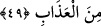
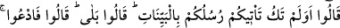

49. Ateşte bulunanlar cehennem bekçilerine: Rabbinize duâ edin, bizden, bir gün
olsun azabı hafifletsin! diyecekler.
“Ateşte bulunanlar,” yâni gerek zayıflar, gerekse kendilerinde büyüklük vehmedenler,
azabın şiddet ve dehşetini tadıp da başka hiçbir çareleri kalmayınca, cehennemliklere
azap etmekle görevli “cehennem bekçilerine:” Bizlere şefâat ederek “Rabbinize duâ
edin, bizden,” hiç değilse dünya günlerinden bir gün kadar “bir gün olsun azabı,”
azabın bir kısmını “hafifletsin! diyecekler.”
“Hazene” lafzı, bekçi mânâsındaki “hâzin” kelimesinin çoğulu olup “bekçiler”
demektir. “Hazn” ise, bir nesneyi, depo ve sandık gibi belli bir yerde saklayıp korumak
anlamına gelir. Ancak kelime, daha sonra “sır ve benzeri şeyleri saklamak” için de
kullanılır olmuştur. Bu açıklama Râğıb’a göredir.
Âyet-i kerîmede “cehennem” lafzı zamirle ifâde olunmayıp özellikle ismiyle anılması,
muhatapları korkutmak ve durumun fecîliğini göstermek içindir. “Cehennem,” Allah’ın o
harıl harıl yanmakta olan ateşinin isimlerinden biridir.
Ateş içindekiler cehennem bekçilerinden duâ etmelerini isterken, “azabın tamamen
kaldırılmasını” ya da “uzunca bir müddet hafifletilmesini” istemek yerine, “çok kısa bir
müddet azıcık bir azabın kaldırılmasını” istemekle yetinmeleri, böyle bir şeyin asla
imkân dâhilinde olmadığını bilmelerindendir.
50. (Bekçiler:) Size peygamberleriniz açık açık deliller getirmediler mi? derler.
Onlar da: Getirdiler, cevabını verirler. (Bekçiler ise): O halde kendiniz yalvarın,
derler. Halbuki kâfirlerin yalvarması boşunadır.
Bir müddet sonra “bekçiler:” Dünyada “size peygamberleriniz” içinde bulunduğunuz
inkâr ve isyânın akıbetinin kötü olduğunu gösteren “açık açık deliller” ve belgeler
“getirmediler mi, derler.” Maksadları, duâ edilecek vaktin geçtiğini ve artık duâya
hiçbir şekilde karşılık verilemeyeceğini bildirerek cehennemlikleri kınamak ve
susturmaktır.
“Onlar da: Getirdiler” yâni bize belgeler getirirlerdi, fakat biz (Mülk sûresi 67/9)
âyette de beyan edildiği üzere kendilerini yalancı saydık, “cevabını verirler.”
“Bekçiler ise: O halde,” yâni durum bu minval üzere olduğuna göre siz, “kendiniz
yalvarın, derler.” Çünkü böyle bir şeyi yapanlar için yapılacak bir duânın bizden sâdır